Luego , si su infraestructura se lo permitía , completaban la información con una ficha de las costumbres y el domicilio habitual de esas personas.
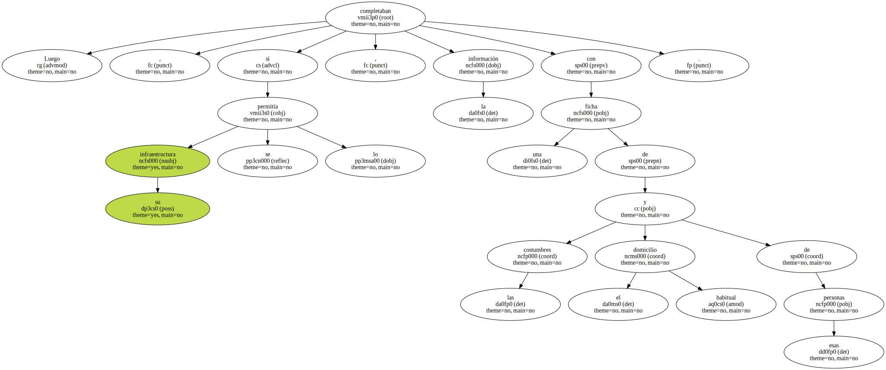En esa base documental , usada ahora para el envío de cartas , aparecen los nombres de Emilio Botín , José María López de Letona , Alvaro Sobrino , Alfonso Escámez , Pablo Garnica , Luis Rezola , Jaime Arguelles , Ricardo Gómez Acebo , Claudio Boada , José María Amusátegui , Luis Valls Taberner , Juan Manuel Fanjul , Luis Magaña , Emilio Ybarra , José Ramón Alvarez Rendueles , Alfonso Cortina , Andrés Elosúa , Manuel Gómez de Pablos , la familia Oriol , Luis Coronel de Palma , Feliciano Fuster y Jaime Soto.
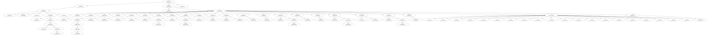En medios de la lucha contraterrorista se considera poco menos que imposible que los mafiosos estén en condiciones de llevar a cabo sus amenazas y mucho menos de cobrar el impuesto revolucionario : carecen de infraestructura para ello tanto en España como en el sur de Francia.
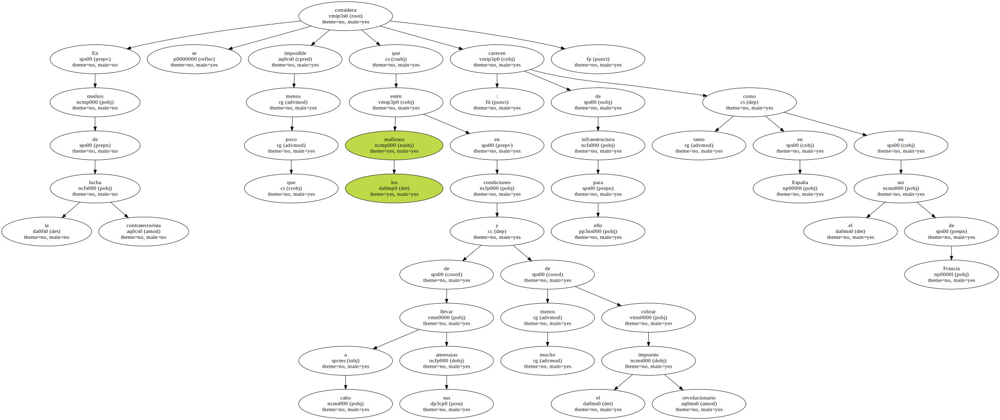Frente al riesgo que supone para los propios terroristas hacer efectivas sus exigencias , los etarras han realizado secuestros en diferentes puntos de la geografía española que han afectado a apellidos ilustres de las finanzas españolas , entre los que cabe destacar a Diego Prado y Colón de Carvajal , Emiliano Revilla , Luis Súñer , el padre del cantante Julio Iglesias y el industrial catalán José Serra Santamans.
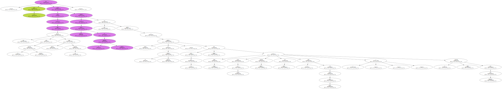Negativa , los grandes de la banca española vivieron el acoso de ETA a comienzos de la década de los ochenta.
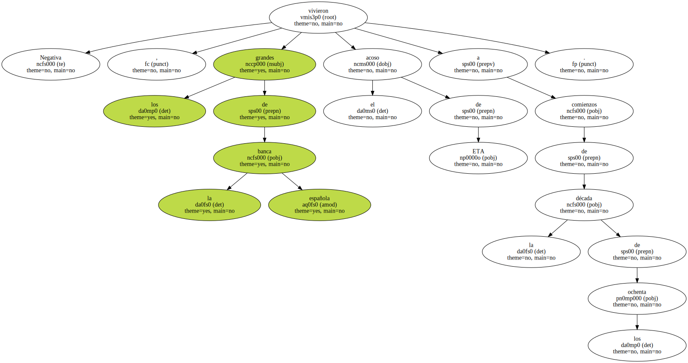En aquella época los consejeros de los bancos más importantes de España recibieron cartas conminatorias para que - pagaran a ETA -.
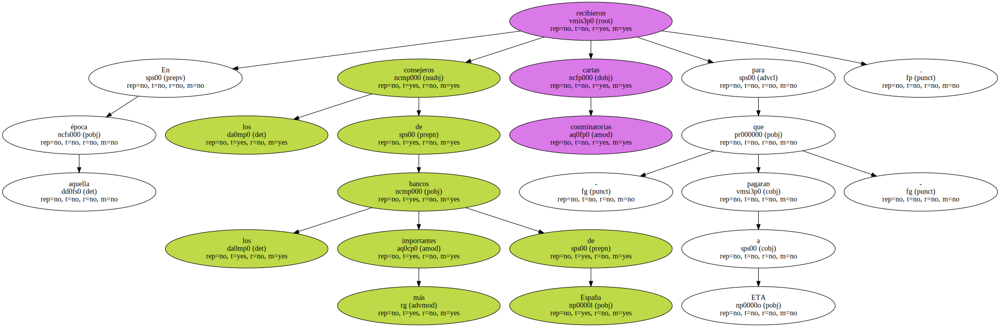Pero la extorsión estaba dirigida no a las personas sino a la entidad como tal.
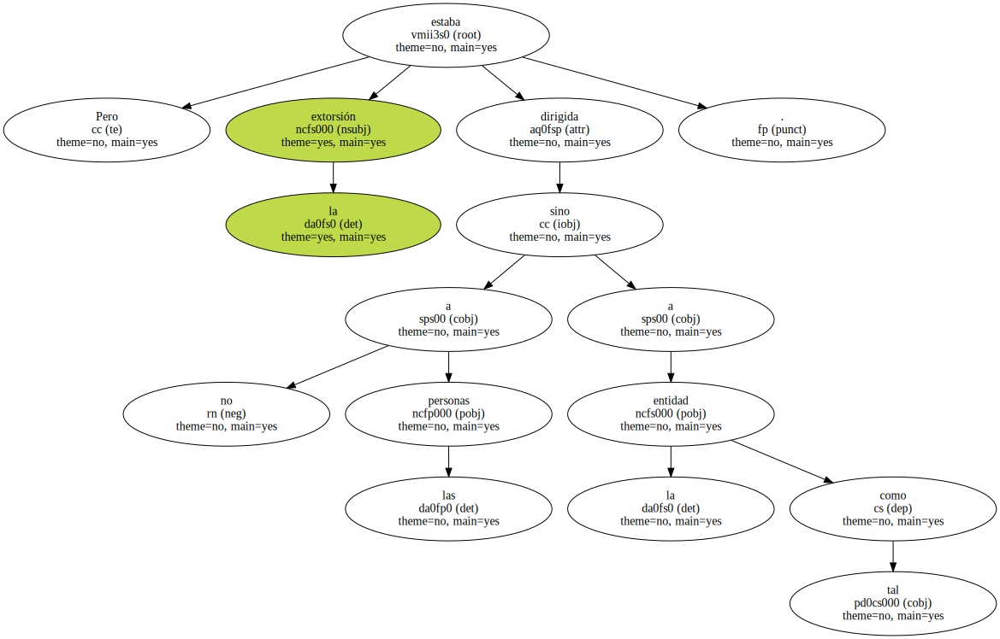La rotunda negativa de los máximos responsables de las finanzas españolas a contribuir al fortalecimiento de la banda mafiosa se saldó con una ofensiva etarra contra oficinas , delegaciones y sucursales de diversas entidades bancarias.
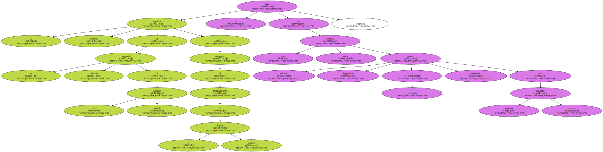Esos sabotajes ocurrieron en el País Vasco y en Navarra.
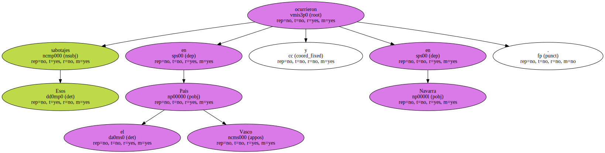La situación de acoso finalizó tras la explosión de una bomba en las oficinas centrales que el antiguo Banco de Vizcaya , ahora BBV , tenía en la Gran Vía bilbaína y que produjo tres muertos y numerosos heridos.
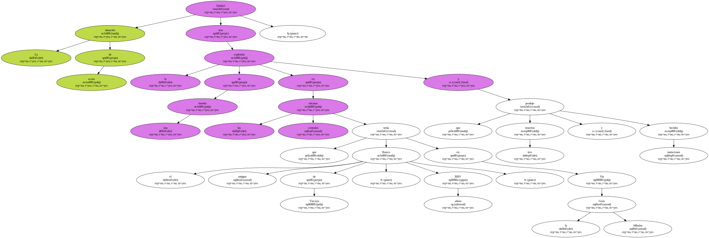Este atentado provocó una fuerte ola de indignación en el País Vasco que culminó con una gran manifestación por la paz en Bilbao.
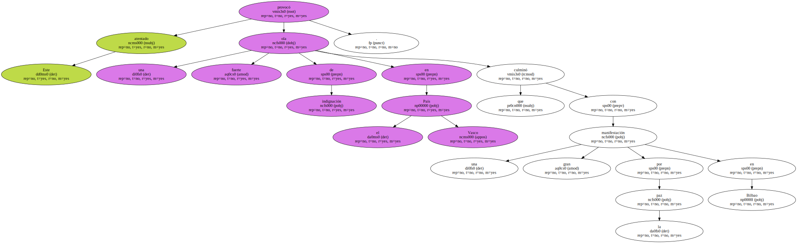Los expertos en la lucha contra el terrorismo estiman que la actual oleada de cartas , remitidas a comienzos del pasado mes de mayo y firmadas por ETA , tienen un objetivo psicológico más que económico : - Se trataría de amedrentar y sembrar el terror en la capital del Estado y desviar la atención hacia otro centro económico para evitar las críticas fundadas que achacan a ETA la responsabilidad de la crisis económica en el País Vasco -.
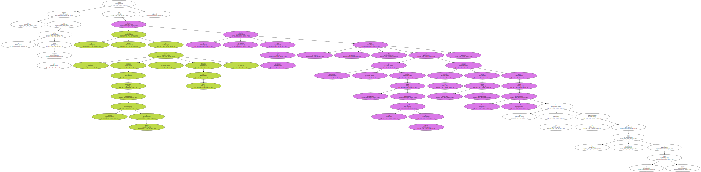Por otra parte , estos medios opinan que la irrupción de cara al verano de los comandos de jóvenes de KAS , denominados Y y especializados en sabotajes , tendrán una justificación para llevar a cabo sus fechorías.
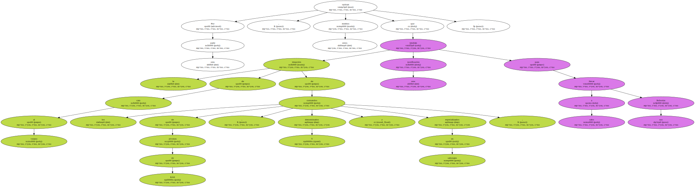En este sentido , estos grupos de acción , creados por el ya encarcelado responsable del comando Barcelona de ETA , Felipe San Epifanio , Pipe , han dirigido sus atentados contra entidades bancarias , empresas con capital francés y sucursales y bienes de la Compañía Telefónica Nacional de España.

La precaria situación económica de la organización terrorista y del entramado ideológico en el que se sustenta añaden ciertas dosis de credibilidad a las misivas enviadas por los etarras y , según fuentes policiales , - pueden constituir el prólogo a un secuestro o atentado contra alguno de los chantajeados -.
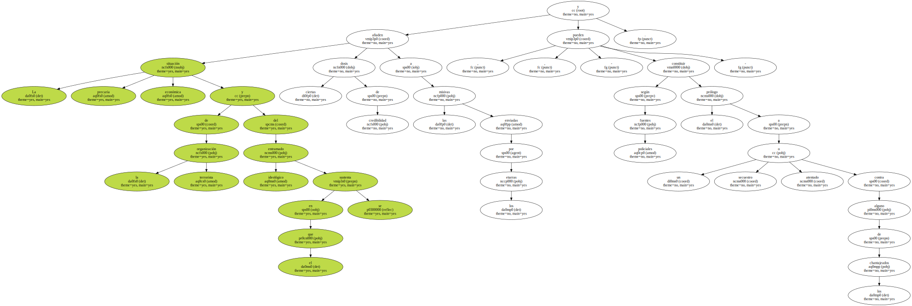Las misivas , cuyo tono no se asemeja al de las cartas enviadas por la banda mafiosa a los empresarios vascos , incorporan una serie de consideraciones políticas que han llevado a que cualificados miembros de la lucha antiterrorista alberguen ciertas dudas sobre su autenticidad.
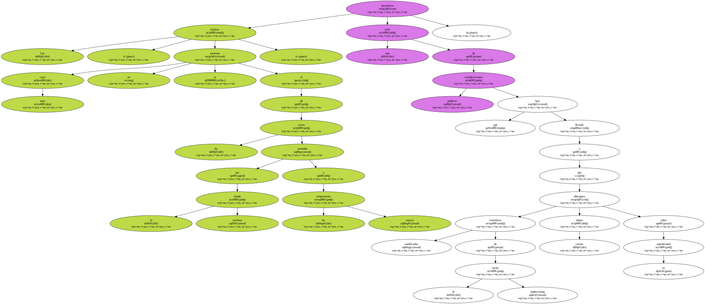